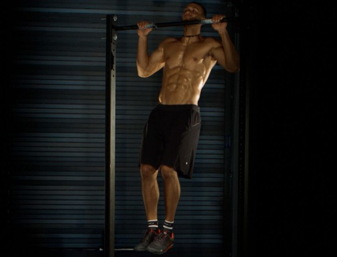
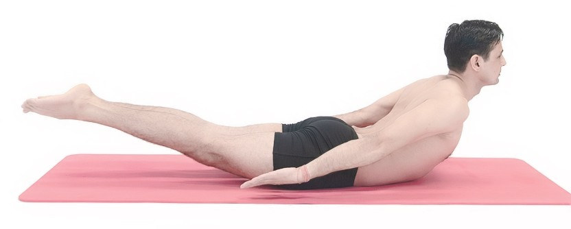

BÀI TẬP GYM TĂNG CHIỀU CAO HIỆU QUẢ VƯỢT TRỘI
Bạn đang mong muốn rằng mình có một chiều cao lý tưởng, hay tính chất công việc của bạn bắt buộc phải có chiều cao tương đối nhưng chiều cao hiện tại của bạn vẫn chưa đủ để đáp ứng yêu cầu đó. Những bài tập gym tăng chiều cao dưới đây phần nào giúp chiều cao của bạn tăng lên từ 1-2cm, thậm chí nếu bạn tập luyện đều đặn, chăm chỉ, đúng cách thì có thể tăng nhiều hơn.
Yếu tố nào quyết đinh chiều cao của chúng ta
- 30% là do dinh dưỡng
- 23% là do gen
- 20% do luyện tập thể dục thể thao
- Phần còn lại là do tác dụng từ môi trường sống như: sinh hoạt, ánh sáng, giấc ngủ,..
Bạn cao lên là nhờ sự sinh sôi của lớp sụn tiếp hợp giữa các đầu xương hay còn gọi là lớp sụn tiếp
hợp. Khi vận động lớp sụn tiếp hợp này sẽ được kích thích phát triển và xương sẽ nhanh dài, từ đó
chiều cao tăng lên.
Việc tập gym sẽ tốt cho sự phát triển chiều cao nếu như bạn tập gym đúng cách. Tuy việc tập gym chỉ
chiếm 20% trong các yếu tố quyết định tăng chiều cao nhưng tập gym sẽ kích thích lượng hormone tăng
trưởng tiết ra nhiều hơn và giúp tăng chiều cao tốt hơn. Tập gym hợp lý sẽ giúp các cơ quan như
tuyến yên, tuyến giáp, hệ xương phát triển mạnh, tăng cường cơ bắp, giúp bạn có được vóc dáng cao
lớn và khỏe mạnh.
Độ tuổi phù hợp để tập gym và tăng chiều cao
Độ tuổi tốt nhất để tập gym tăng chiều cao là 18 – 20, một số người có thể kéo dài đến 25 tuổi. Lúc
này, khung xương đã khá chắc chắn và cấu tạo ổn định nên tập các bài tập tác động đến xương sẽ giúp
kích thích tăng chiều cao hiệu quả.
Với độ tuổi nhỏ hơn từ 17 trở xuống xương chưa ổn định, việc tập gym có thể ảnh hưởng đến quá trình
hình thành khung xương, gây lệch cột sống nếu như tập không đúng cách.
Những bài tập gym tăng chiều cao
Treo người trên xà đơn
Bài tập gym tăng chiều cao này này giúp cột sống của bạn kéo dài ra nhờ khoảng cách giữa các đốt sống. Đồng thời cũng giúp kéo giãn, chân, lưng, giúp giảm đau mỏi sau cả ngày phải ngồi nhiều.
Cách thực hiện:
Đầu tiên đưa 2 tay nắm lấy thanh xà với 2 lòng bàn tay hướng về phía trược, 2 bàn tay đặt sát nhau.
Sau đó treo người trên xà đơn trong khoảng 15 - 20 giây
Tư thế cào cao
Tư thế cào cào sẽ giúp cải thiện phần cơ và tăng cường sức mạnh của lưng giữa, lưng trên và cơ cột sống. Bài tập này không chỉ kích thích phát triển chiều cao mà còn rất tốt cho sức khỏe cột sống, đặc biệt với những bạn phải ngồi nhiều.
Cách thực hiện:
Nằm sấp trên mật đất và đặt tay bên cạnh bạn
Khi bạn hít vào thì nâng chân và thân lên
Sử dụng đùi trong của bạn, nâng chân của bạn lên mà không uốn cong đầu gối của bạn.
Giữ nguyên tư thế trong 1 phút. Giải phóng.
Nên lưu ý gì khi luyên tập gym tăng chiều cao
- Luôn nhớ khởi động trước khi tập, giãn cơ sau khi tập và hít thở đều trong quá trình tập.
- Uống đủ nước trong và sau khi tập gym để đảm bảo bổ sung đầy đủ năng lượng và phục hồi nhanh chóng.
- Nên có thời gian nghỉ giữa các bài tập, thời gian nghỉ không quá 5 phút.
- Không sử dụng các chất kích thích để tránh cản trở quá trình tập luyện.
Bên cạnh các lưu ý khi tập gym tăng chiều cao thì bạn cần chú ý đến chế độ dinh dưỡng và duy trì
thói quen nghỉ ngơi hợp lý thì mới đạt được chiều cao tối đa, đó là:
- Chế độ dinh dưỡng cần cho bạn phải đủ 4 nhóm dưỡng chất là chất đạm, chất béo, chất bột đường,
vitamin và khoáng chất. Bạn nên ăn các thực phẩm giàu canxi như hải sản, tôm cua cá ốc, các loại rau
lá xanh đậm, các loại hạt… Chú ý uống đủ nước, ít nhất 2 lít mỗi ngày để tăng cường quá trình trao
đổi chất của cơ thể.
- Bạn nên ngủ đủ giấc và ngủ sớm để có thêm nhiều hormone tăng trưởng do tuyến yên tiết ra trong giấc
ngủ ban đêm. Mỗi ngày bạn nên ngủ đủ 8 tiếng và nên đi ngủ trước 22 giờ đêm để có thể ngủ sâu giấc
lúc 11h vì thời điểm từ 11h đêm – 1h sáng là lúc tuyến yên hoạt động tiết ra hormone tăng trưởng
giúp tăng chiều cao.
Những bài tập gym trên đây cả nam và nữ đều có thể áp dụng dễ dàng và hiệu quả thì còn tùy thuộc vào “độ chăm chỉ” của bạn. Hãy chọn cho mình bài tập gym tăng chiều cao thích hợp nhé.